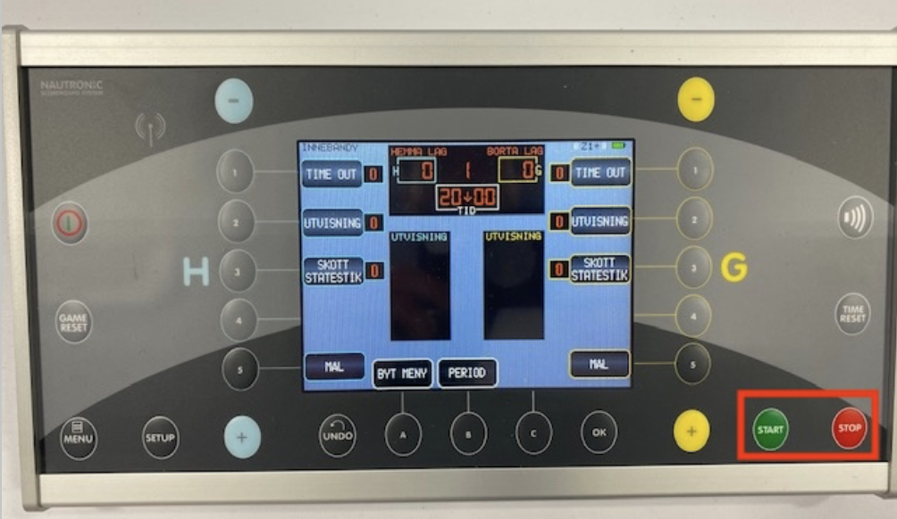
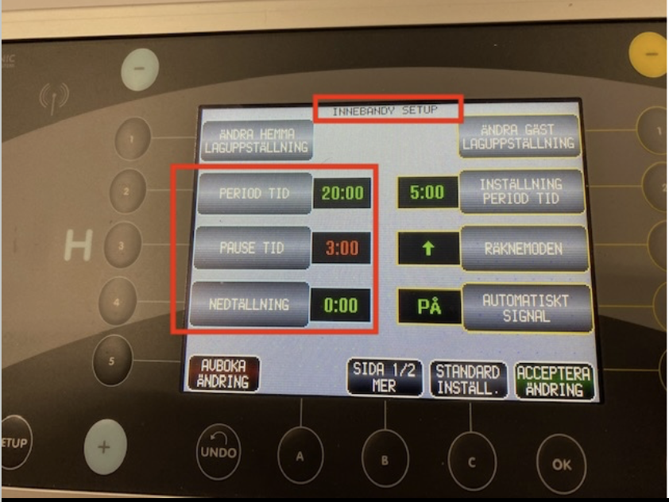

Översikt
Den här lathunden tar dig steg för steg genom det sekretariatet behöver göra under en innebandymatch i Segeltorps hallar. Tavlan är en Nautronic NAUCON-1000.
- Konsolen — vilka knappar är vilka
- Innan matchen — fysisk förberedelse + checklista på tavlan
- Under matchen — 4-manna (bara klockan)
- Under matchen — 5-manna (poäng, utvisning, straff)
- Efter matchen — städa undan
- Var där minst 30 minuter innan matchstart. Då hinner du gå igenom checklistan nedan i lugn och ro innan det börjar bli rörigt.
- Felregistreringar går att rätta. Fel mål kan tas bort med −-knappen, fel utvisning kan justeras. Ingenting du trycker på tavlan är permanent — du behöver inte vara perfekt i realtid.
- När matchen är igång är det mesta du gör START, STOP och +. Resten är specialfall.
Konsolen — knappöversikt
Konsolen är det du som sekretariat använder för att styra resultattavlan på väggen. All information — klocka, poäng, period, utvisningar — skickas trådlöst från konsolen till tavlan, så det du trycker här syns några sekunder senare på storbildstavlan.
De röda boxarna runt START och STOP i bilden nedan är där du kommer trycka mest under en match.

Fysiska knappar du kommer använda
- START / STOP — gröna och röda knappen längst ner till höger. Startar och stoppar matchklockan.
- + (blå, hemma) / + (gul, gäst) — lägger till poäng. − (uppe i hörnen) drar bort poäng om du registrerat fel. Används bara på 5-manna — i 4-manna räknas inte poäng på tavlan.
- GAME RESET — nollar matchen.
- SETUP — öppnar inställningsmenyn (sport, periodtid, paustid…).
- OK — bekräftar val. UNDO — backar senaste valet.
- TIME RESET — nollar bara klockan (utan att röra poäng/period).
Pekskärmen
Stora skärmen i mitten är touch. Under match visar den knappar för TIME OUT, UTVISNING, SKOTT STATISTIK och MÅL för respektive lag, samt PERIOD och BYT MENY nere. I setup-menyn visar den inställningarna.
1. Innan matchen
Fysisk förberedelse
- Hämta bord och stolar till sekretariatet. Finns i förrådet. Ställs vid sargen på lämpligt ställe i hallen.
- Hämta konsolen från kassaskåpet i förrådet. Var kassaskåpet sitter varierar mellan hallar — fråga en Segeltorps-ledare om du inte vet.
- Kolla batterinivån på konsolen. Är den låg: hämta laddaren (ligger i samma kassaskåp) och plugga in vid sekretariatsbordet.
- Lägg fram minst 3 extra-bollar. De kastas in till domaren vid behov under matchen (när bollen försvinner ut, går sönder, osv.).
- 5-manna: ställ fram två utvisningsstolar. En stol per lag, vid sargen nära sekretariatsbordet. (Hoppa över det här på 4-manna — inga utvisningar.)
- 5-manna: hämta inloggning till matchapp:en. Parallellt med tavlan ska sekretariatet registrera mål, målskyttar, assist, straffar och period-/matchstart-stopp i en app. Be Segeltorps ledare om kod och adress innan matchen börjar — själva användningen av appen gås inte igenom här. (Hoppa över på 4-manna.)
Checklista på tavlan
Gå igenom de fyra punkterna nedan i ordning. Är allt redan rätt? Bra — då är du klar. Om något inte stämmer: klicka på "Så fixar du det" under den punkten för stegvisa instruktioner.
-
Är konsolen på? Pekskärmen ska lysa.
Så fixar du det
Tryck på power-knappen uppe till vänster på konsolen (den lilla blåa knappen med strömsymbol). Vänta några sekunder.
-
Står det INNEBANDY på pekskärmen? (uppe till vänster på skärmen)
Så fixar du det — fel sport visas
- Tryck på BYT MENY-rutan på pekskärmen (en av de svarta rutorna nere på skärmen).
- Välj INNEBANDY i listan.
Det går också att trycka direkt på en av de blåa eller gula sifferknapparna 1–4 i listan av sporter.
-
Är tavlan nollställd? Poängen ska stå på 0–0, perioden på 1, och klockan visar antingen 0:00 eller periodtiden (t.ex. 15:00 eller 20:00) — beroende på om konsolen är inställd att räkna upp eller ned. Det viktiga är att inget hänger kvar från en föregående match.
Så fixar du det — gör en game reset
- Tryck på GAME RESET på vänster sida av konsolen.
- Konsolen frågar om bekräftelse. Tryck OK (eller ACCEPTERA ÄNDRING på pekskärmen).
- Pekskärmen ska nu visa 0–0, period 1, och klockan i utgångsläge (0:00 om tavlan räknar upp, periodtiden om den räknar ned).
GAME RESET nollar poäng, period och klocka. Blanda inte ihop: GAME RESET är inte samma sak som "Total återställning". Total återställning raderar alla inställningar och ska aldrig köras under en matchdag. Du gör den inte av misstag — den kräver att man håller in flera knappar samtidigt vid uppstart. -
Stämmer tiderna? Tryck SETUP på konsolen — då öppnas INNEBANDY SETUP där du ser tiderna. De ska vara:
- PERIOD TID — 15:00 för 5-manna (3 × 15), 20:00 för 4-manna (2 × 20)
- PAUSE TID — 5:00 för 5-manna, 3:00 för 4-manna
- NEDTÄLLNING — 0:00 (ja, det stavas verkligen så på skärmen)

Så här ser INNEBANDY SETUP ut — de tre röda boxarna är värdena du kontrollerar. Så fixar du det — något stämmer inte
- Är du inte redan i SETUP — tryck SETUP på konsolen (se bild nedan).
- Tryck på det värde du vill ändra på pekskärmen — t.ex. PERIOD TID.
- Ett numeriskt tangentbord visas. Skriv in det rätta värdet (t.ex. 15:00).
- Tryck ACCEPTERA ÄNDRING (gröna rutan nere på pekskärmen).
- Upprepa för andra värden om de också är fel.
- När alla stämmer: tryck ACCEPTERA ÄNDRING en sista gång för att gå tillbaka till matchläget.
Ett tryck på SETUP öppnar INNEBANDY SETUP. Viktigt: ändra PERIOD TID till vänster — inte INSTÄLLNING PERIOD TID till höger. Den högra ändrar bara standardvärdet, inte den faktiska periodtiden för matchen som ska spelas nu.Tryckte du på fel värde? Tryck AVBOKA ÄNDRING (röda rutan nere till vänster på pekskärmen) eller UNDO på konsolen.När alla tre värden stämmer: tryck ACCEPTERA ÄNDRING (gröna rutan nere på pekskärmen) för att stänga setup.
2. Under matchen — 4-manna
På 4-manna används tavlan bara för matchklockan. Poäng får inte visas på tavlan på Blå nivå (10–12 år) — det är en regel från Svenska Innebandyförbundet. Inga utvisningar, straffar eller time-outs heller.
Det här är allt du gör under matchen:
- Periodstart: tryck START (gröna knappen) när domaren blåser igång.
- Vid mål: tryck STOP. Klockan ska alltid stoppas vid mål (även på 4-manna). Tryck START igen när domaren blåser igång.
- Vid annan avblåsning där domaren signalerar tidsstopp (skadad spelare, någon klivit på bollen, etc.): tryck STOP. Tryck START igen när domaren blåser igång spelet.
- Vid periodslut: signalhornet ljuder automatiskt. Tryck sedan START för att starta pausens nedräkning (den börjar inte räkna ner av sig själv). När pausen är slut tutar tavlan igen — tryck START en gång till när domaren blåser igång nästa period.
De röda boxarna runt START och STOP i konsolbilden överst på sidan visar var de sitter.
3. Under matchen — 5-manna
5-manna använder START / STOP precis som 4-manna, plus poäng, utvisningar och straff.
- Mål
- Utvisning
- Straff
- Time-out
Huvudflödet
- Periodstart: START.
- Vid mål: tryck STOP direkt. Vänta sedan tills domaren blåser igång spelet igen (efter tekning på mittpunkten) — då registrerar du målet med + (blå för hemma, gul för gäst — knapparna sitter på nedre raden mellan SETUP och OK) och trycker START. Att vänta gör att tavlan inte räknar upp poäng innan spelet faktiskt återupptas. Du kan också trycka på MÅL-rutan på pekskärmen för rätt lag.
- Vid avblåsning där tiden ska stoppas: STOP. Starta igen med START.
- Vid periodslut: signalhornet ljuder automatiskt. Tryck sedan START för att starta pausens nedräkning (den börjar inte räkna ner av sig själv). När pausen är slut tutar tavlan igen — tryck START en gång till när domaren blåser igång nästa period.
- Felregistrerat mål? Tryck − (uppe i hörnen — blå för hemma, gul för gäst).
Cuper är annorlunda. Varje cup har egna tävlingsbestämmelser — typiskt 2×15 minuter med rullande tid hela vägen och ingen effektiv tid. Innan matchstart: fråga någon Segeltorps-ansvarig om matchtid, paustid och om effektiv tid gäller. Time-outs och utvisningar gäller alltid i 5-manna-cuper.
Utvisning
När domaren visar utvisning (typiskt 2 minuter):
- Tryck STOP så fort domaren blåser av.
- Tryck på UTVISNING-rutan på pekskärmen — på hemmalagets sida (vänster) om hemmalaget ska utvisas, gästlagets sida (höger) annars.
- Ett numeriskt tangentbord visas — skriv in spelarens nummer och bekräfta.
- Välj typ av utvisning på pekskärmen — nästan alltid 2:
- 2 — vanlig 2-minutersutvisning (det här är 9 av 10 fall)
- 5 — 5-minutersutvisning (ovanligt — vid grövre förseelser)
- 10 — 10 min personligt straff (osportsligt uppträdande)
- 2+2, 5+2, 2+10 — kombinationer om domaren signalerar två förseelser samtidigt på samma spelare. Är du osäker — fråga domaren.
- Bekräfta med ACCEPTERA ÄNDRING på pekskärmen (eller OK på konsolen). Pekskärmen visar nu utvisningstiden bredvid lagets poäng och räknar ner när matchen är igång.
- Tryck START när domaren blåser igång igen.
Två utvisningar samtidigt på samma lag (ovanligt)
Ibland blir två spelare i samma lag utvisade i nära följd. Då gäller:
- Båda utvisningarna räknas parallellt — laget spelar 3 utespelare mot 5 så länge båda löper.
- Lägg in dem i den ordning domaren ger dem — den först givna utvisningen ska in först på pekskärmen.
- Om laget släpper in mål bryts bara den äldsta 2:an (den först inlagda). Den andra fortsätter rulla. Tavlan sköter detta automatiskt — förutsatt att de lagts in i rätt ordning.
Är du osäker på ordningen — fråga domaren innan du registrerar.
Matchstraff (MP1, MP2, MP3) — händer sällan
Matchstraff är det grövsta domaren kan utdöma. Spelaren lämnar planen för resten av matchen och får inte spela. Sekretariatet behöver registrera ett lagstraff på tavlan så laget spelar med en spelare mindre i 5 minuter — sedan kan en annan spelare ersätta den utvisade på planen.
- MP1 — 5 minuter lagstraff. Spelaren lämnar matchen.
- MP2 — 5 minuter lagstraff. Spelaren lämnar matchen och nästa match (rapporteras vidare).
- MP3 — 5 minuter lagstraff. Spelaren lämnar matchen plus minst en match till — beslutas av disciplinnämnd.
På tavlan: registrera som en vanlig 5-minutersutvisning på spelarens nummer (UTVISNING → nummer → 5). Notera vilken typ av matchstraff (MP1/2/3) det var i appen och på protokollet — det är där skillnaden mellan dem hanteras, inte på tavlan.
Straff
När domaren tilldömer en straff:
- Tryck STOP.
- Klockan står still under straffläggningen — du gör inget mer på tavlan medan straffen läggs.
- Vid mål: tryck + för rätt lag (blå för hemma, gul för gäst).
- Vid räddning eller miss: ingen poängändring.
- Tryck START när domaren blåser igång spelet igen.
Time-out
Varje lag har rätt till en (1) time-out per match — inte per period. När den är förbrukad får laget inte begära en till. Om ett lag begär time-out:
- Tryck STOP så fort domaren beviljar time-outen.
- Tryck på TIME OUT-rutan på pekskärmen för rätt lag (vänster sida = hemma, höger = gäst).
- Vänta. Domaren blåser i pipan när time-outen ska börja räknas — då trycker du START, och 30-sekundersnedräkningen drar igång.
- När de 30 sekunderna är slut tutar tavlan automatiskt. Domaren blåser igång spelet — tryck START igen för att starta matchklockan.
4. Efter matchen
- Tryck GAME RESET. Gör alltid en game reset efter slutsignal — även om det kommer en ny match direkt efteråt — så att nästa sekretariat startar med blank tavla. (Tryck OK för att bekräfta.)
- Är det en ny match direkt efter? Då låter du resten stå (bord, stolar, konsol) — nästa sekretariat tar över.
- Annars: städa undan. Ställ tillbaka bord och stolar. Plocka in utvisningsstolarna (om 5-manna). Lägg konsolen i kassaskåpet (med laddaren om du använt den).
Vid problem
Fråga domarna. De är rutinerade och vet vad som behöver göras.
Vanliga situationer
- Slutsignalen tutade inte vid periodslut: det händer ibland. Säg till domaren — de avslutar perioden ändå när de märker att tiden tagit slut.
- Helt vilse? Tryck STOP och vinka in domaren. Det är aldrig pinsamt — de stannar hellre matchen 30 sekunder än får felaktig tid.